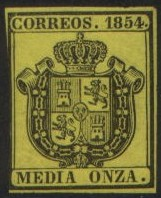
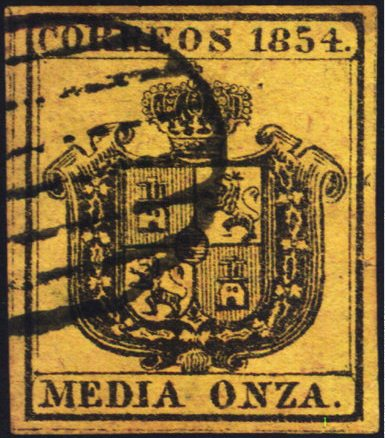
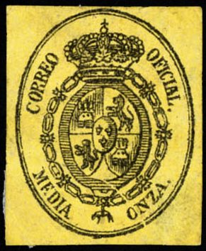
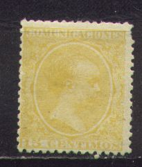

Note: on my website many of the
pictures can not be seen! They are of course present in the
catalogue;
contact me if you want to purchase it.



1/2 o (media onza) black on yellow 1 o (una onza) black on lilac 4 o (cuatro onzas) black on green 1 L (una libra) black on blue
Value of the stamps |
|||
vc = very common c = common * = not so common ** = uncommon |
*** = very uncommon R = rare RR = very rare RRR = extremely rare |
||
| Value | Unused | Used | Remarks |
| 1/2 o | * | *** | |
| 1 o | * | *** | |
| 4 o | * | *** | |
| 1 L | ** | *** | |
The 'value' on this stamps is actually the weigth, ounces (=onza) and pounds (=libra). Similar postage stamps were issued in Spain in 1853 and 1854.
Forgeries of these stamps exist. Album Weeds describes three of them:

First forgery of Album Weeds; picture found at
http://www.graus.com
First forgery of Album Weeds, also note the slanting
"8" in "1854", no stop behind
"CORREOS".
The first forgery described in Album Weeds has the "C" of "CORREOS" placed too low and no "." behind this word.
Second forgery
The second forgery has the letters "RRE" of "CORREOS" all joined at the bottom and the value label is almost not rounded in the corners. A bogus value exists in the value 1 L black on lilac of this second forgery (with a stop behind "LIBRA").
In the third forgery the "C" of "CORREOS" has a rounded knob at the head (sorry, no picture available yet), it seems to have been done quite badly.

Primitive forgery the "C" of "CORREOS" and
the "O" of "ONZA" are different for example.
1/2 o (media onza) black on yellow 1 o (una onza) black on lilac 4 o (cuatro onzas) black on green 1 L (una libra) black on grey
Value of the stamps |
|||
vc = very common c = common * = not so common ** = uncommon |
*** = very uncommon R = rare RR = very rare RRR = extremely rare |
||
| Value | Unused | Used | Remarks |
| 1/2 o | c | c | |
| 1 o | * | * | |
| 4 o | * | * | |
| 1 L | * | *** | |
These stamps could also be used in the Spanish colonies, such as the Philippines. Album Weeds describes one set of forgeries of these stamps, where the "C" of "CORREOS" touches the chain (or almost touches it as in the next forgeries?):
There are other differences with the genuine stamps, such as the number of pearls on the crown. The ornaments of the chain (especially the most left and right ornament) are badly done when compared to a genuine stamp.
Another forgery of this stamp, with the lettering badly done:

Picture of the 1 Libra found at http://www.graus.com
I've been told that this stamp is a forgery as well:

The next stamp in the design of the Spain 1889 'Babyface' in the value 15 c yellow is actually an official stamp. I have listed it under the rest of the 'Babyface' stamps.

(-) red (-) blue
These stamps have perforation 14.
Value of the stamps |
|||
vc = very common c = common * = not so common ** = uncommon |
*** = very uncommon R = rare RR = very rare RRR = extremely rare |
||
| Value | Unused | Used | Remarks |
| (-) red | * | * | |
| (-) blue | * | * | |
These stamps were issued in two colors (without value), one set was for the house of deputies and the other set for senators. They were only used for two days, but are not postage stamps (since the mail from these institutions was not required to bear postage stamps in the first place).
With National Library
(-) green and black (-) red and black With Congress building
(-) violet and black (-) green and black With statue of Cervantes
(-) red and black (-) brown and black With portrait of Cervantes
(-) violet and black (-) brown and black
Value of the stamps |
|||
vc = very common c = common * = not so common ** = uncommon |
*** = very uncommon R = rare RR = very rare RRR = extremely rare |
||
| Value | Unused | Used | Remarks |
| All values | c | ** | |
I've seen modern forgeries of these stamps, imperforate and inverted center. I suspect them to be products made by a forger of Hialeah, Florida. They are made with a computer scanner and printer.
Imperforate computer generated forgery with inverted center; the
center has been cut with a software tool and pasted back upside
down.
Stamps - Briefmarken - Timbres-Poste - Postzegels - Francobolli - Estampillas

{kind=link}
{kind=link}
{kind=link}